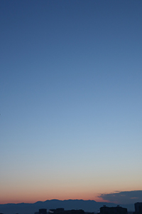

About Emre Usun
Hello, welcome to my personal photograph page. Firstly, this webpage is about my photography and about my life. I will be sharing my newest photos and my newest designs. I was born in Bursa, Turkey in 1995. In the 2020 summer, I am graduated from journalism. I was thinking about taking my own professional photos, but I just had that opportunity in 2020 November. Before that, I was playing the piano. I tried to learn some adobe software at my old university which is “Kocaeli University” but I could not learn anything at my last university course.
I was thinking about studying abroad. Before planning to study abroad, I went to the USA with a work and travel program. I lived in the USA for 3 months. I worked as a lifeguard at Six Flags. At end of summer 2020, I started preparing English exam. I failed multiple times but eventually, I got a good result. Finally, in January 2021 I started to IDP course at Fanshawe College.
